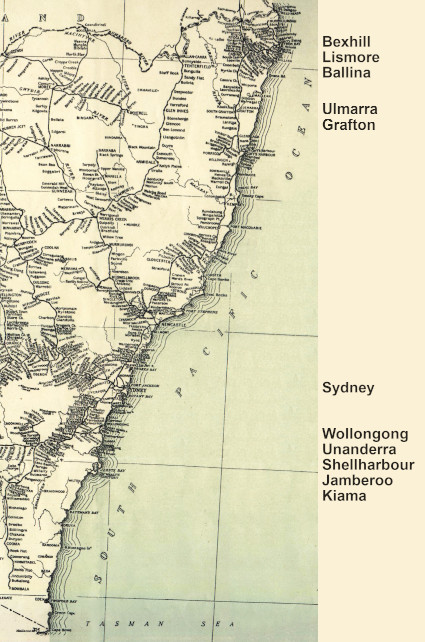
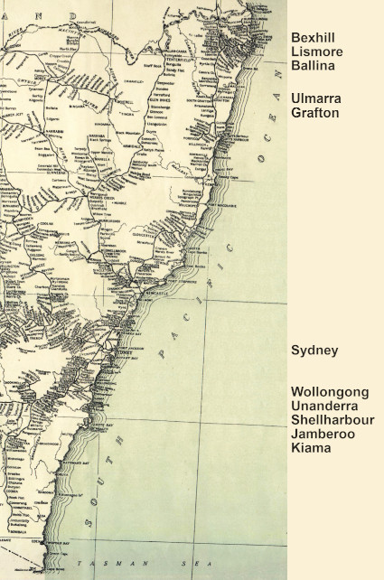

-
The Rankins in Australia
a work in progress ....

George Rankin (1817–1898) and Elizabeth Pennycook Murray (1815–1900)
When George and Elizabeth arrived in Australia early in 1844, they first relocated to Shellharbour, 70 miles south of Sydney. A few months after their arrival, two more of our ancestors, Thomas and Harriet Fenwick, also turned up in Shellharbour. Their son, Robert Fenwick ended up marrying George and Elizabeth's daughter, Hellen Rankin. Hellen and Robert became our great-grandparents. When Thomas and Harriet moved to Wollongong, 17 miles north of Shellharbour, George and Elizabeth did too. Again when Thomas and Harriet returned to Shellharbour, George and Elizabeth were there as well. George set up business as a contractor, first repairing and rebuilding, then taking on large projects such as building bridges and wharves with his sons, David and Frederick under the business name of George Rankin and Sons. Many of the contracts went through the Shellharbour Council where Thomas was three times Mayor.
1839 December 16 - Marriage of George Rankin, carpenter, and Elizabeth Murray, daughter of Fred. Murray
Around 1872, George's son David managed to get his first bridge building contract further north in the Clarence River district. George and family followed, and so did Thomas's eldest son, Robert Fenwick with his wife Hellen. From there they all stuck together as they moved their way further northwards until reaching the Richmond River district, close to where another of our ancestors, Duncan McIntyre, was settled at Wardell. At least one of David Rankin's children, Ernest Charles David, was born in Wardell. Later, David and George settled at Bexhill, alongside Corndale where Duncan McIntyre's daughter, our great-grandmother Jessie (McIntyre) McDonald, lived out the rest of her days, till she passed away in 1916. As a matter of further conincidence, Duncan McIntyre's father-in-law, Joseph Kelly, was buried in the Dundee Howff where many of the Rankin family members came to their final rest.
» George Rankin (1817–1898)
married Elizabeth Pennycook Murray (1815–1900) in Dundee, Angus, 16.12.1839and they had the following children:
(unnamed) Rankin 22.12.1840 –
*Lochee22.12.1840
†Lochee(stillborn) George Rankin ??.??.1842 –
*Lochee28.02.1843
†Lochee(under 1 year) David Rankin 26.12.1844 –
*Jamberoo24.09.1919
†Lismorem. Jane Price in Kiama, 19.11.1877 Frederick Rankin 04.10.1848 –
*Shellharbour19.09.1923
†Moore Parkm. Sarah Ann McPaul in Dapto, 18.12.1878 Hellen Rankin 12.09.1850 –
*Albion Park14.10.1940
†Cooroym. Robert Thomas Fenwick in Shellharbour, 05.02.1873 Isabella Rankin 15.01.1854 –
*Shellharbour07.08.1923
†Tweed Headsm. William Henry Powell in Kiama, 26.05.1873 Rosa Jane Rankin 26.10.1855 –
*Jamberoo02.06.1936
†Lismorem. Alexander Thorburn in Wyrallah, 25.01.1881
The four youngest children of George Rankin and Elizabeth Pennycook Murray:
 Frederick Rankin
Frederick Rankin
m. Sarah Ann McPaul Hellen Rankin
Hellen Rankin
m. Robert Thomas Fenwick Isabella Rankin
Isabella Rankin
m. William Henry Powell Rosa Jane Rankin
Rosa Jane Rankin
m. Alexander Thorburn
The children of the children:
 name
name
 1900 Four generations L-R Bill & Ethel Johnston, Hellen Fenwick, Elizabeth Rankin
1900 Four generations L-R Bill & Ethel Johnston, Hellen Fenwick, Elizabeth Rankin
 1906 wedding of Henry William Powell (son of Isabella Rankin) and Mary Ann (Minnie) Lightbody
1906 wedding of Henry William Powell (son of Isabella Rankin) and Mary Ann (Minnie) Lightbody
 1913 wedding of William John Thorburn (son of Rosa Jane Rankin) and Alice Kelly

1913 wedding of William John Thorburn (son of Rosa Jane Rankin) and Alice Kelly
The New South Wales coastline showing the south coast and north coast areas where the Rankins were working and living
George Rankin, the choleric
With George having been born into such a disease-ridden place as Dundee was at the time and growing up at the height of cholera, it is not too surprising his temperament became so 'choleric', a term not only referring to 'chole', one of the four bodily humours but also to the behaviour of a person struck by the disease:
- characterized by anger "a choleric outburst","an irascible response"
- quickly aroused to anger "a hotheaded commander"
- easily moved to anger
- "men of the choleric type take to kicking and smashing"- H.G.Wells"
The mouth of the Richmond River with Immigrant Creek shown on the left, where David Rankin built his first bridge in the district.
The Places of the Rankins
Jamberoo, Illawarra District
The first place where George and Elizabeth lived in Australia was Jamberoo, a settlement which grew up around the cedar cutting of the early nineteenth century. The village of Jamberoo lies at the western end of the Minnamurra Swamp and is nestled in the steep sided valley of the Minnamurra River. As such, it is not subjected to the extreme weather which happens, for instance, in the nearby Albion Park.Ulmarra, Clarence River District
By 1872, George's son David, had moved to the Clarence River district where he built bridges for the government, but George and Elizabeth remained in Shellharbour until 1873. David was soon accompanied by his brother, Frederick. At first, the work done by the Messrs Rankin was partially tendered out for supplies of logs, hewn timber and earthwork but eventually those too became part of their stock and trade.
Around 1873, their parents, George and Elizabeth also took on the 700km northwards move, settling in Ulmarra, a small town on the south bank of the Clarence River, lying about 12km north-west of Grafton. There, George also went into bridge building work for the government.Grafton, Clarence River District
There are a number of references in the newspapers to Frederick having been settled in Grafton. At the time of his move away from the area, his farm at Great Marlow was put on the market to be sold or let in 1883, just two years before Grafton became a city.Wardell, Richmond River District
In 1879, David had his 50 acre property, house and contents at Ulmarra up for sale. He then moved to Wardell and once again was building bridges as well as wharves. It seems that Frederick remained in Grafton until at least 1886 at which time his farm was also up for sale. The exact whereabouts of George and Elizabeth at that time, remain a little unclear.Bexhill, Richmond River District
In 1894, only four years before his death, George acquired conditional purchase lands at Bexhill, presumably alongside where David had already settled, having had such warm responses from the locals after very successfully building excellent bridges for them. When David lost his wife in 1898, Elizabeth moved in with him and his six children to care for them as their housekeeper.Lismore, Richmond River District
David and Frederick went into voluntary insolvency in 1880 and at that time David moved to Lismore. Only two decades earlier, in 1856, the site of William Wilson's homestead paddock was proclaimed to be the "Town of Lismore" in the NSW Government Gazette. In the following years a township grew up on what was once known as the North Arm of the Richmond River, now called Wilsons River.Unanderra (Charcoal), Illawarra District
Mention should also be made that Frederick returned south to the Illawarra District, this time to Unanderra about 10km south-west of Wollongong. Unanderra was previously known as Charcoal and is where Frederick's wife Sarah Ann was born. The move was possibly due to the couple having been married in the neighbouring Dapto and that they simply wanted to be closer to her family.Tweed Heads, Tweed River District
Isabella, the daughter of George and Elizabeth, married William Henry Powell of London, and the couple moved to Tweed Heads about 1883.Wyrallah, Richmond River District
George and Elizabeth's daughter Rosa Jane married Alexander Thorburn of Wyrallah, on the east bank of Wilsons River, and about 10km south of Lismore. Coincidentally, Wyrallah borders on the north side of the Tucki Tucki Swamp where another member of our family, John Gillies McDonald, had his property named "Hillside". In 1870, Alexander Thorburn first arrived in the Richmond District in search of gold but in 1874 took up working for David Rankin on the Emigrant Creek bridge. Rosa and Alexander later lived in Wollongbar until their retirement in 1919, and celebrated their Golden Wedding anniversary in South Lismore in 1931.

Aerial view of Bexhill, Rankin lands and Rankin Road
George Rankin (3 blocks, 5+ acres each)
Ernest Charles David Rankin (12+ acres)
Elenor Jane Rankin (8+ acres)
Ernest and Elenor are the children of George's son DavidGeorge, the hard-working, choleric and irascible 'bad egg',
and Elizabeth, the long suffering wife.
From Elizabeth's obituary, 1900:
1844, at Jamberoo, Shellharbor and Illawarra for some years, then in the Clarence district, for a number of years,
and finally in Richmond River district, till her death in 1900, leaving behind 3 daughters and 2 sons, incl. Mr. F. Rankin of Unanderra
and 39 grandchildren on Richmond River, Tweed River and South Coast
TIMELINE:
1844 upon arrival, at Shellharbor
1860 Broughton Creek farm for sale, occupied by George Rankin
1860 Kiama, assault on wife who prevented sending son David to Broughton Creek, resulted in one month's imprisonment in Wollongong gaol, and to "find sureties to keep the peace for six months, himself in 50 pounds two sureties in 25 pound each", having beaten her over one hundred times and beaten the children unmercifully
1862 Shellharbor Council George Rankin seconds nomination of Thomas Fenwick
1862 (same section) Mrs George Rankin woken by snake
1864 Shellharbor Councillor's mention of the excellent manner in which George Rankin's contract was completed.
1867 Shellharbor, George's application for extension of term on work on road is accepted
1867 Shellharbor, assault on Dennis Foley while erecting a bridge for a road that ran through Foley's land. Fined 20s or 24hrs imprisonment. Fine was paid.
1870 George Rankin of Shellharbor's tender for erection of Mullet Creek bridge was accepted
1871 new and substantial bridge over Mullet Creek erected by Mr Rankin for the Government for 500 pounds
1871 Shellharbor, George Rankin and Sons tender for bridge over Bovards Creek blocked by Mayor
1873 Shellharbor, at George Rankin's residence, daughter Helen married to Robert Thomas Fenwick
1873 Shellharbor, at George Rankin's residence, daughter Isabella married to William Henry Powell
1873 Clarence and Richmond, Ulmarra advert from George for 23 cwt monkey
1873 Ulmarra Council pleased over George Rankin's Alumny (now Alumy) Creek bridge but not the approaches
1875 tender accepted for bridge at C.Everingham's, by Ulmarra Council
1875 George Rankin's tenders accepted - Bridge at Everingham's and formation of road
1875 tenders wanted by George Rankin at Swan Creek Public School (near Grafton)
1876 retort in Clarence and Richmond Examiner over hand rail on bridge over Deep Creek
1877 in Kiama, David Rankin of Charcoal married to Jane Price of Kiama
1878 tenders wanted for hewn timber for bridge over James Creek (which runs off the Clarence River), to be forwarded to George at Serpentine Bridge, North Arm, Ballina
1881 tenders wanted for girders and piles
1882 April tenders wanted for girders, piles and planking
1894 conditional purchase Lismore 15a 2r 25p portions 65,66,67 parish Bexhill 5pound per acre
1895 tender accepted, George Rankin of Lismore for erection of wharf and approach at Wyrallah
1897 tender accepted for wharf and approach at East Coraki R.R.
1898 George, father of David Rankin of South Lismore, died at his residence, Bexhill.
1898 Inquest into Georges's death. Verdict: Senile decay and old age.
David
The hard working son and all round nice guy.
About 1871, aged about 27, in the Clarence district, built many a bridge and wharf in the Clarence, Richmond and Tweed Districts,
in 1873 built bridge over Alumny Creek, then over Whiteman's creek and another on the Newton Boyd road, and over the Nymboida
moved to Richmond district, where he first built a bridge over Immigrant Creek, near Ballina
from the Clarence to the Tweed in all directions are to be found bridges and wharves built by Davie Rankin
Note: Unanderra was originally called Charcoal or Charcoal Creek
TIMELINE:
1872 David Rankin, tenders required for timber and logs for Alumny Creek Bridge
1872 Ulmarra Council paying balance of 33 pounds for contract over Coola Creek and culvert at Osborne's
1873 Big Hill, Newton Boyd Line, D and F Rankin advert for ten good labourers
1877 David Rankin, contractor of Charcoal Creek, married Jane Price of Kiama, in Kiama
1878 D and F Rankin seeking tenders for timber for Para Creek Bridge
1878 House fire adjacent Macquarie River Bridge, occupied by workers for Messrs Rankin
1878 Messrs Rankin working on Macquarie Bridge and to build two new bridges
1878 D and F Rankin's offer accepted for bridge over the main creek at Charcoal
1878 Main Charcoal Bridge being erected, being the fourth in the area after the minor Charcoal Bridge, Darke's Bridge and and the excellent Fairy Creek Bridge.
1878 D and F Rankin wanting tenders wanted for 170 cubic yards of 3 inch metal at Charcoal Creek. 1878 D and F Rankin, Charcoal, wanting pick and shovel men, highest wages given
1878 auction for Messrs D and F Rankin for old bridge material
1878 David Rankin was charged with having assaulted William Harvey. Rankin was provoked by Harvey who was with his brother and another, so he told them to move off and eventually hit defendant with a stick. The Harveys took to throwing stones at Rankin. All four were fined 20 shillings and ordered to pay their own costs.
1879 auction of David Rankin's highly improved 50a farm, portion 21, at Ulmarra, contact Mr Fenwick now on the farm
1880 auction of David Rankin's household furniture & effects and contractor's plant and draught mare
1883 Broadwater, 3 year old son, and only child, Donald died (was their only child to be born in Grafton)
1886 tenders accepted for wharves at Wardell and Swan Bay
1890 tenders wanted to draw 25000 feet of timber, contact D.Rankin Junction Hotel, North Lismore
1894 August, Lismore, Bankruptcy Court, voluntary sequestration: David Rankin, of Lismore, contractor
1893 September, notice to creditors re Bankruptcy No. 8636
• took a break from bridge building to be proprietor of Junction Hotel, North Lismore
• shortly after, he retired from hotel keeping, his wife died in 1898
• David and his wife Jane Price were both born in Jamberoo
• passed away, aged 75, at Mr. Thorburn's, South Lismore
1919 24 September, passed away, loved father of Edith Rankin, Mrs N.E.Fiddes and Mrs R.W.McGill
• left behind 2 sons and five daughters:
• Mrs Butt, Boatharbour
• Mrs Turner, Gympie
• Mrs Fiddes, Misses Mabel and Edith, Sydney
• sons Ernest and David
• also a brother, Frederick, Sydney
• and three sisters:
• Mrs Fenwick, Cooroy
• Mrs Powell, Tweed Heads
• Mrs Thorburn, South Lismore
• and three grandchildren
• his sons served in the war, David died in Palestine and Ernest returned 1 week before his father's death
1919 for our late brother, A Lodge of Sorrow from Richmond River Masonic Lodge
1919 October 21, son Ernest Charles David Rankin married Caroline May Seccombe of Wollongbar
1919 November 27, Probate request by David Butt of Bexhill executor of Will of David Rankin
1935 June 25, death of Elsie Ann (Rankin) Fiddes at Bellevue Hill, Sydney, sister of Edith Rankin and Mrs R.W.McGill
1939 March 9, death of Mabel Grace (Rankin) McGill, at Newcastle, wife of Robert William McGill of Hamilton and sister of Edith Maud and Ernest Rankin, Sydney, Mrs D.Butt, Lismore, Mrs Ted Turner, Brisbane.
1951 October 31, funeral of Elenor Jane (Rankin) Butt, wife of Mr David Butt of Boatharbour
1972 death of Jessie Euphemia (Rankin) Turner
Frederick
Another hard working son (but the apple doesn't fall far from the tree)
TIMELINE:
1878 In Dapto, Frederick M. (Murray?) second son of George Rankin, Clarence River, married to Sarah Ann McPaul, third daughter of George McPaul of Charcoal
1883 farm to let on the river bank at Great Marlow, Grafton
1886 56a farm to let on the river bank at Great Marlow, Grafton
1886 56a farm up for auction on the river bank at Great Marlow, Grafton
Hellen
The caring daughter.
TIMELINE:

{kind=link}
{kind=link}
{kind=link}
{kind=link}
{kind=link}
{kind=link}
About Us
We are the descendants of Anglo-Scottish-Prusso-Germanic Australian migrants who settled in the newly formed colonies of New South Wales and Queensland in the nineteenth century. The idea behind these pages is to present the stories and characters of those early settlers along with information about their origins, descendants, families, whereabouts and activities.There are often themes running through their struggles and achievements telling a tale of resourcefulness and hardships in an alien world. The paradox of Australia as an ancient and raw continent and as a 'New World' portrays a collision of ideals and realities yet still shows a continuity in how those people dealt with everyday life.